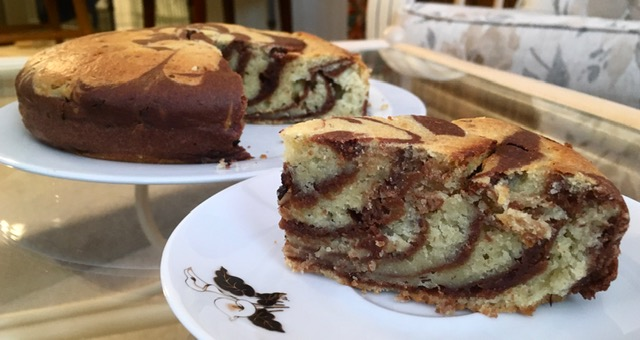

Marble Cake
Ingredients:
-
1 and 1/2 Cup of Kefir
-
2/3 Cup of Sugar
-
1/2 Cup of Vegetable Oil
-
Egg Substitute
-
1 Cup of Semolina
-
1 Cup of Flour
-
1 tsp of Vanilla Extract
-
2 tbsp of Cocoa Powder
-
1/2 tsp of Soda
-
1 tsp of Baking Powder

Method:
-
Pour the semolina with kefir, mix and leave it at room temperature for 30 minutes.
-
Combine sugar and egg substitute in a bowl. Use a mixer to beat them until smooth and fluffy.
-
When the semolina swells, mix it with the egg and sugar mix.
-
Add the sifted flour and baking powder.
-
Mix it all together until smooth and there are no lumps.
-
Divide the mixture into two equal parts and add cocoa powder to one, and stir well again.
-
Cover the cake tin with parchment paper and place two tablespoons of the light dough in the center. Then, on top of it put 2 tablespoons of chocolate in the center.
-
Repeat the previous step until all of the dough is used to make a pattern.
-
Then, put it in the preheated oven and bake until golden brown for 35-40 minutes.